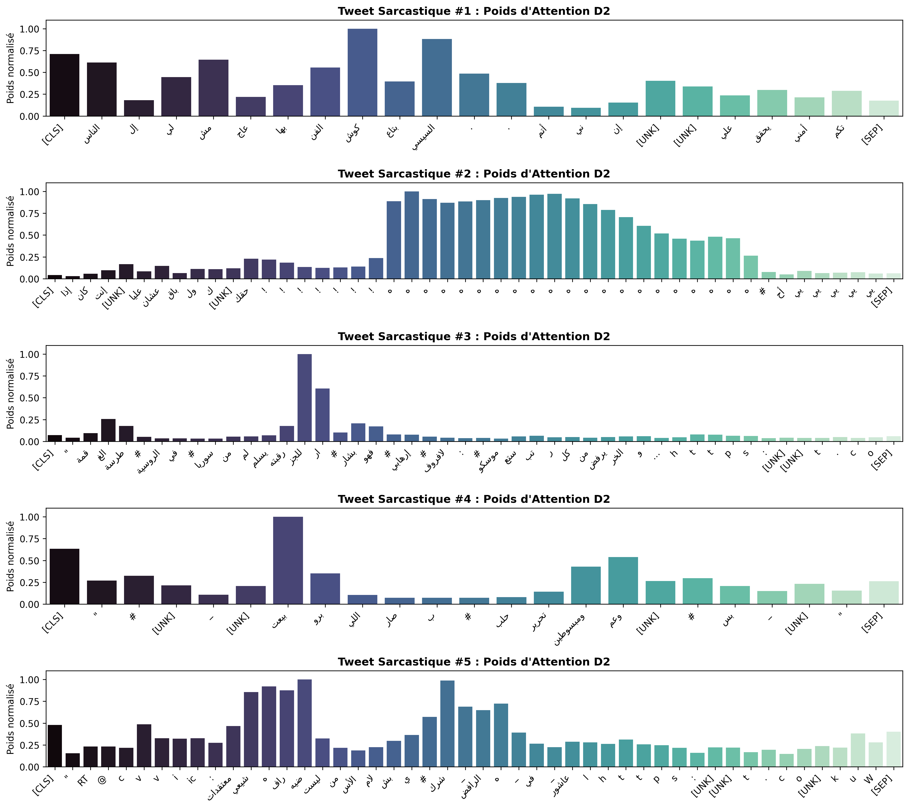
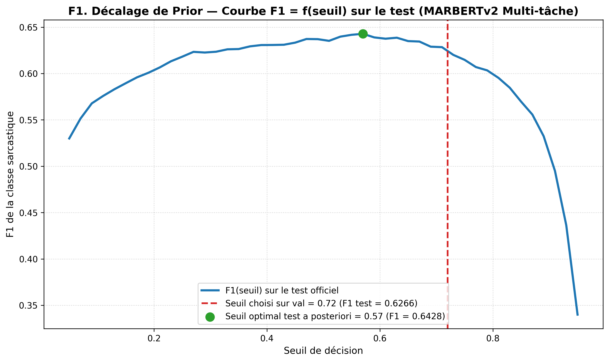

Entrée stricte : Texte brut seul. Les colonnes sentiment et dialect sont interdites en entrée à l'inférence.
Évaluation sans fuite : Tous les hyperparamètres, seuils de décision et prétraitements sont appris exclusivement sur Train et arbitrés sur Val.
Audit Qualité Données
Pièges Identifiés dans ArSarcasm-v2
32,0 %
Décalage de Format
Espaces de bord : 4,8 % train vs 32 % test
4 tweets
Fuite de Données
Strictement identiques train/test purgés
13 groupes
Labels Contradictoires
Textes identiques, labels opposés supprimés
Espace insécable : Présent dans 1,0 % de Train mais seulement 0,05 % de Val.
Risque d'artefact : Un modèle non nettoyé apprendrait à classifier le formatage typographique au lieu du sarcasme.
Assainissement : Normalisation systématique des espaces et déduplication avant tout apprentissage.
Distribution & Déséquilibre
Taux de Sarcasme & Corrélations
17,2 %
Train
1 930 sarcastiques / 11 217
17,3 %
Validation
217 sarcastiques / 1 255
27,4 %
Test Officiel
821 sarcastiques / 3 000 (+10 pts)
Concentration Émotionnelle (Train)
Sentiment Négatif : 41,9 % de sarcasme.
Sentiment Neutre : 3,0 % de sarcasme.
Sentiment Positif : 2,7 % de sarcasme.
Variabilité Dialectale (Train)
Égypte : 34,6 % | Golfe : 24,9 %.
Levant : 21,2 % | MSA : 10,7 %.
Maghreb : 39,5 % (échantillon infime de 38 tweets).
Métrique Reine
Le Piège Absolu de l'Accuracy
82,7 %
Accuracy Trompeuse
Classifieur trivial « Toujours Non-Sarcastique »
0,0000
F1 Sarcasme Réel
Rappel = 0,0 % sur les tweets sarcastiques
Un modèle aveugle : Prédire la classe majoritaire donne l'illusion d'une excellente performance (82,7 % d'exactitude).
Inutilité pratique : Zéro détection du sarcasme. Le système est totalement aveugle à la classe d'intérêt.
Métrique imposée :F1 de la classe sarcastique ($F1_{\text{sarc}}$) et PR-AUC. L'accuracy globale est formellement bannie pour guider nos modèles.
Audit des Heuristiques
Raccourcis de Surface : Règle vs Modèle
0,3618
Absence d'URL
Taux sarc. : 23,3 % sans URL vs 8,2 % avec
0,2664
Présence Mention @
Lien faible avec l'ironie
0,2694
Espaces Anormaux
Couverture très réduite (5,5 %)
Conclusion de l'Audit des Shortcuts (Validation)
Aucune heuristique de surface n'approche la baseline ($F1 \le 0,36$ vs $0,515$).
L'absence d'URL est informative : Les tweets d'actualité factuels contiennent des liens externes, tandis que le sarcasme s'exprime dans l'immédiateté verbale.
Nécessité de modélisation : La syntaxe superficielle ne suffit pas ; la tâche exige d'apprendre la sémantique et la pragmatique.
Score Optimiste (Val)Baseline Officielle
Baseline TF-IDF + Régression Logistique
0,5217
PR-AUC Val
Aire précision-rappel
0,5153
F1 Sarcasme Val
Au seuil optimal 0,42
0,5041
F1 @ 0,50
Seuil standard
4,81 s
Temps Calcul
186 332 features
Représentation : N-grammes de mots (1, 2) + n-grammes de caractères (2 à 5) en bordures de mots (char_wb), min_df=2.
Équilibrage : Régression logistique avec class_weight='balanced' (ajusté sur Train uniquement).
Signalement obligatoire : Le seuil (0,42) et le F1 (0,5153) sont mesurés sur la validation : il s'agit d'un score optimiste servant de borne basse de comparaison.
Mécanisme : Évaluation de l'implication : « Ce tweet est {sarcastique / sérieux} ». Probabilité normalisée sur les deux hypothèses.
Constat contre-intuitif : La formulation française surpasse l'arabe (0,412 vs 0,387), l'espace multilingue de DeBERTa séparant mieux les concepts abstraits dans les langues majeures de son pré-entraînement.
Limite : F1 inférieur de 10 points à la baseline TF-IDF (0,41 vs 0,515). Le zero-shot NLI ne saisit pas le dialecte twitter arabe.
Alerte ContaminationTransfert Heuristique
Heuristique CAMeL « Négatif ⇒ Sarcasme »
0,4656
F1 Sarcasme Val
Règle déterministe sans seuil
77,88 %
Rappel Élevé
169 sarcasmes / 217 détectés
33,20 %
Faible Précision
Énorme volume de Faux Positifs
Modèle :CAMeL-Lab/bert-base-arabic-camelbert-da-sentiment (PLM spécialisé en dialectes arabes).
Règle : Prédire sarcasme = 1 dès que le modèle prédit un sentiment négatif.
Biais majeur : Deux tiers des prédictions sont de faux positifs. Tout mécontentement n'est pas sarcastique.
Risque de fuite/contamination : ArSarcasm-v1 a été construit à partir de sous-ensembles annotés en sentiment (ASTD / SemEval). Une contamination du pré-entraînement de CAMeLBERT n'est pas exclue (non vérifiée).
Scores Optimistes (Val)Progression Deep Learning
Réseaux Profonds & Transformers (Parties C à E)
Famille / Architecture
Seuil
PR-AUC
F1 Val
Baseline TF-IDF
0,42
0,5217
0,5153
C1. BiLSTM (AraVec dégelé)
0,18
0,5026
0,5074
C2. BiLSTM + Attention custom
0,26
0,4910
0,5099
C3. Mini-Transformer (SANS pos)
0,26
0,4876
0,5170
D2. AraBERT gelé + Attention
0,32
0,6976
0,6652
E1. AraBERT mono-tâche
0,50
0,7097
0,6797
E2. MARBERTv2 Multi-Tâche (λ=0,3)
0,72
0,6726
0,6812

Poids d'attention (D2) : focalisation sur les rires répétés هههههه et le vocabulaire ironique.
Test Officiel DéverrouilléAudit de Généralisation
Partie F : Généralisation & Décalage de Prior
0,6266
F1 Test Officiel
Seuil val 0,72 | IC 95 % : [0,599 ; 0,653]
0,6428
F1 Seuil a Posteriori
Seuil optimal = 0,57 (+0,0162)
Décalage de Prior (+10 pts) : Taux sarcasme 17,3 % val vs 27,4 % test. Explique la contraction du F1 de 0,681 à 0,627 sans recalibration.
Dialecte non vu (Égyptien retiré) : F1 = 0,7715 (vs 0,7616 avec égyptien en train) $\rightarrow$ invariance dialectale prouvée !
Suppression des URLs/mentions : F1 test = 0,6271 ($\Delta = +0,0005$). Aucun sur-apprentissage de raccourcis.
Ablation des marqueurs de surface :93,67 % des sarcasmes restent détectés sans emojis ni rires هههه.

Courbe de transfert : le pic de F1 glisse de 0,72 (val) à 0,57 (test) en raison de la hausse de prévalence.
Monitoring de dérive : Suivi en temps réel de la distribution des probabilités (test de Kolmogorov-Smirnov).
Recalibration bayésienne du seuil : Réajustement non supervisé via l'algorithme EM (Saerens et al.) pour annuler l'impact du prior shift sans ré-étiquetage.
Analyse de 30 Erreurs & Limites Majeures
Marqueurs trompeurs (50 % des erreurs) : 100 % des Faux Positifs ! Tweets amicaux contenant des rires هههه mal interprétés.
Contexte du monde manquant (30 % des erreurs) : Faux Négatifs sur l'actualité politique/sportive. Solution future : module RAG.
Lacune Maghreb : Seulement 38 tweets dans ArSarcasm-v2. Nécessite des adaptateurs LoRA spécifiques pour la darija marocaine.